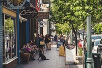

Franklin is preparing for spring season
 In the city of franklin the people are buying food and preapring themselves for the next fourth of july and the upcoming spring season. The mayor spoke this afternoon about the responsability of the citizens to drive carefully and reduce the contamination that these celebrations may cause